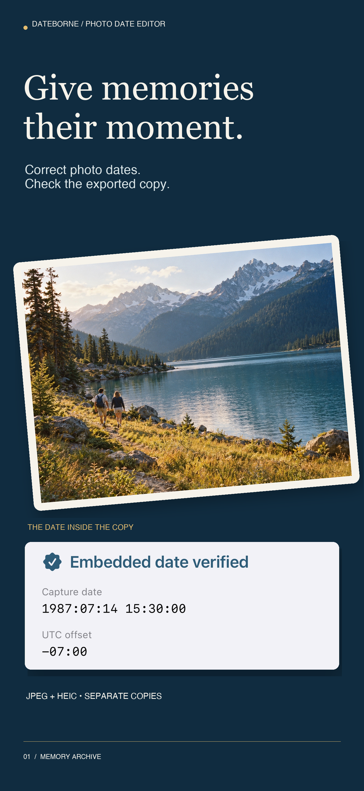
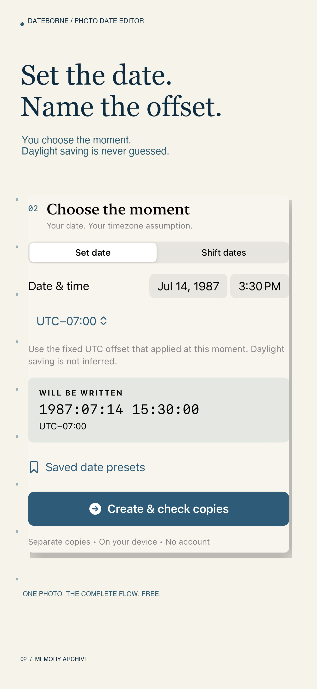
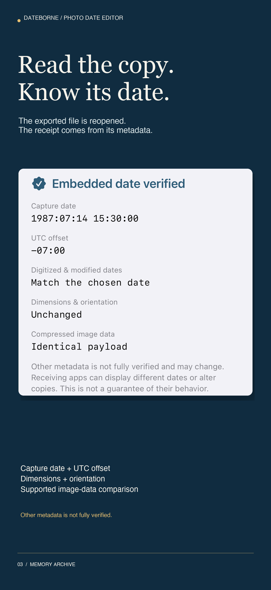
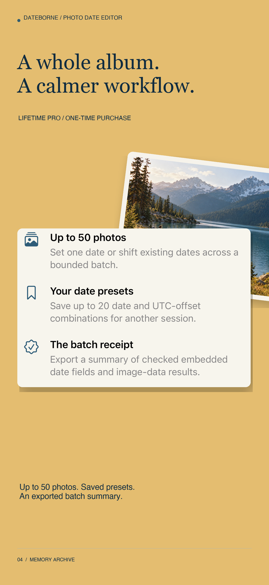
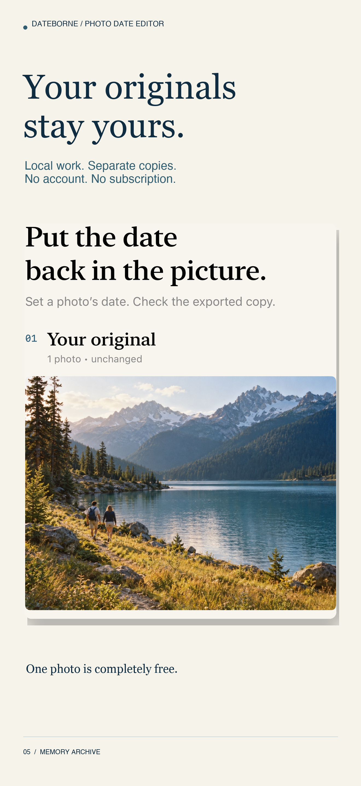
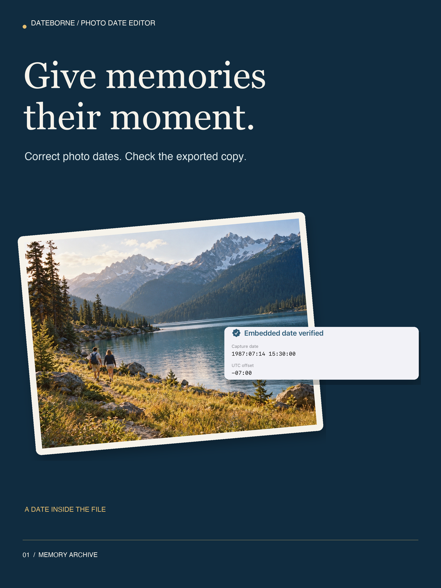
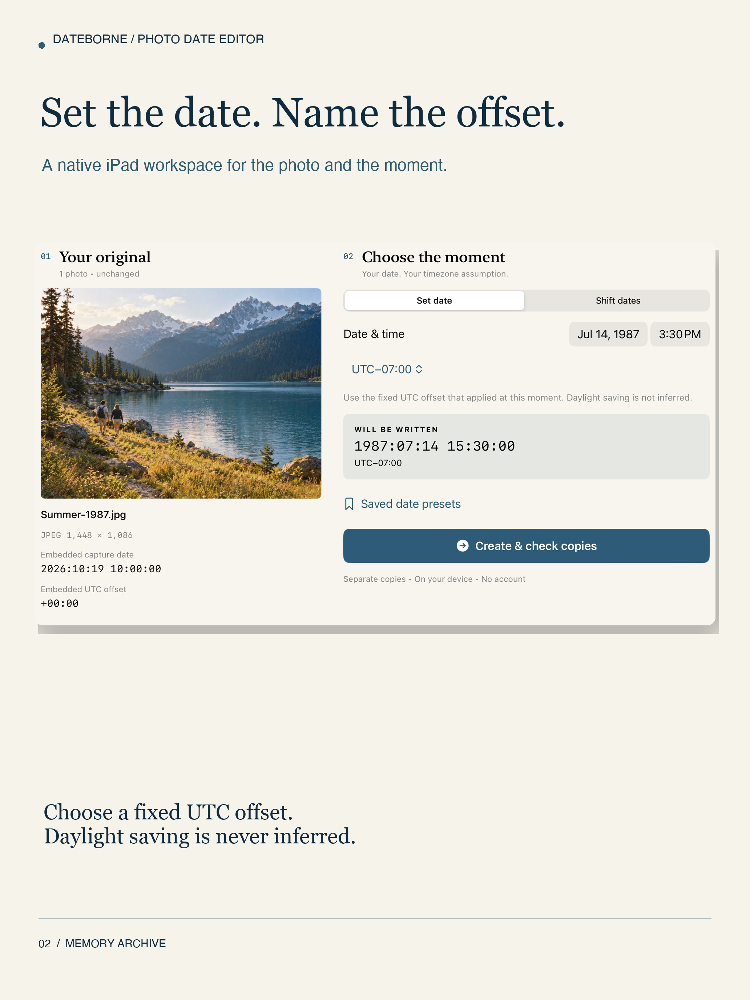
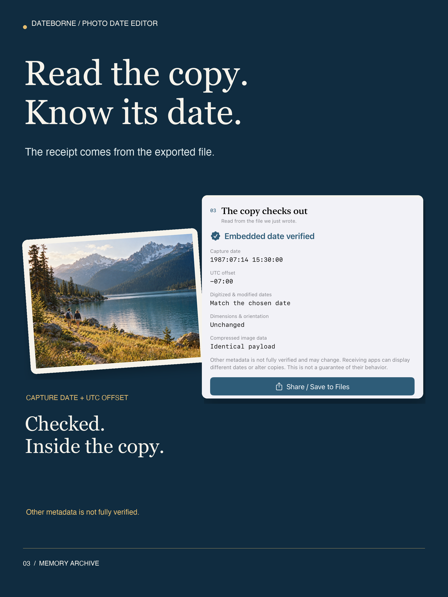

Every memory.
Its own moment.
A photo scan remembers the day it was scanned. You remember the day it was taken.
Set an explicit capture date and UTC offset. Create a separate JPEG or HEIC copy. Then read the embedded date back before you share it.
Original generated example artwork, used to demonstrate assigning a historical date. No customer photos.
01 / ChooseYour original stays yours.
Import a still photo from Photos or Files. Work on a separate local copy, with no account or server.
02 / DateA moment, made explicit.
Set the date or shift an existing one. Choose the fixed UTC offset that applied; daylight saving is never guessed.
03 / CheckRead what was written.
The app reopens each exported file and checks required embedded dates and offsets. Supported compressed image data is compared separately.
Give memories their moment.





Authentic native app UI with the original generated example. Dedicated iPad layouts below.



Free for a complete photo.
Import, edit, create a checked copy and share one photo at a time for free. Lifetime Pro is a one-time purchase for batches of up to 50 photos, up to 20 saved presets and batch verification summaries. No subscription.
Maximum 40 MB and 60 megapixels per photo, 500 MB per session. JPEG/HEIC stills only; no RAW, video or Live Photo editing. Other metadata may change and is not comprehensively verified. Receiving apps can show different dates. Temporary work must be saved before closing or starting again.
Support
Questions about a date, timezone or export? Email hello@arvinify.com. Please describe the file format and steps; share a photo only if you choose to and have permission.
Rejected under Guideline 4.3(a). October 20, 2026. Review recovery in progress; first clarification drafted only. No new binary resubmission or release. Previous campaigns and pre-submission validation remain historical.